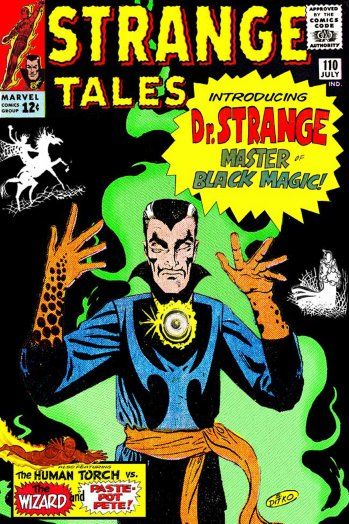

First Appearence: Strange Tales #110
Writer: Stan Lee
Illustrator: Steve Ditko
Aliases: Stephen Vincent Strange
Publisher: Marvel Comics
Abilities: Magic
Doctor Strange is a practicing magician who draws his powers from mystical entities such as Agamotto, Cyttorak, Ikonn, Oshtur, Raggadorr, and Watoomb. Strange also wields mystical artifacts including the Cloak of Levitation which enables him to fly, the Eye of Agamotto, an amulet whose light is used to negate evil magic, the Book of the Vishanti, a grimoire which contains knowledge of white magic, and the Orb of Agamotto, a crystal ball which is used for clairvoyance.
In addition to his magical abilities, Strange is trained in several martial arts disciplines and has shown proficiency with numerous magically conjured weapons including swords and axes. Strange was a skilled neurosurgeon before nerve damage impaired his hands.
Biography:
Dr. Stephen Strange, M.D. is a selfish doctor who only cares about wealth from his career. After a car accident shatters the bones in his hands, he is unable to perform surgery when his hands begin to tremble uncontrollably. Too vain to take on a teaching job, Strange desperately searches for a way to restore his hands.
After he exhausts his funds, he becomes a drifter. Depressed and still searching, Strange, while walking near the docks, overhears two sailors talking about a hermit called the Ancient One (who is actually the Earth's Sorcerer Supreme) in the Himalayas, who can cure any ailment. Strange uses the last of his funds to seek out the aged mystic. The Ancient One refuses to help Strange because of his arrogance, but senses a good side that he attempts to bring to the surface. He fails, but Strange's heroism appears when he discovers the Ancient One's disciple, Baron Mordo, attempting to kill the old man.
After a confrontation with Mordo leads to him being shackled with restraining spells preventing him from either attacking Mordo or warning the Ancient One, Strange desperately and selflessly accepts the Ancient One's offer to become his apprentice to have some hope of helping the old man. The Ancient One, pleased at Strange's sincere change of heart, accepts the westerner and promptly frees him from the restraining spells while explaining he was aware of Mordo's treachery all along.
Strange soon becomes Mordo's most enduring enemy, as the Ancient One teaches the doctor the mystic arts. After completing his training, Strange returns to New York City and takes up residence within the Sanctum Sanctorum, a townhouse located in Greenwich Village, and is soon assisted by his personal servant Wong.
Strange Tales (1951-1976) (Issues #110-111, 114-169)
Marvel Premiere Issues #3-14 1972-1981
Doctor Strange (1968-2018) 19 issues
Doctor Strange Vol 2 (1974-1987) 81 issues
Strange Tales Vol 2 (1987-1988) 19 issues
Doctor Strange, Sorcerer Supreme (1988-1996) 90 issues
Doctor Strange Vol 4 (2015-2017) 27 issues
Doctor Strange and the Sorcerers Supreme (2016-2017) 12 issues
Doctor Strange Classics (1984-1984) 4 issues
Doctor Strange, Sorcerer Supreme Annual (1992-1994) 3 issues
Doctor Strange Vol 3 (1999-1999) 4 issues
Strange (2004-2005) 6 issues
Doctor Strange: The Oath (2006-2007) 5 issues
Strange Vol 2 (2010-2010) 4 issues
Giant-Size Doctor Strange #1 (October, 1975)
Doctor Strange Annual #1 (December, 1976)
Pocket Book Series Doctor Strange: Master of the Mystic Arts (1978)
Doctor Strange Special Edition #1 (March, 1983)
Marvel Graphic Novel #23 (September, 1986)
Marvel Graphic Novel #49 (July, 1989)
Doctor Strange / Ghost Rider Special #1 (April, 1991)
Doctor Strange vs Dracula #1 (March, 1994)
What is it That Disturbs You Stephen? (Oct 1997)
Untold Tales of Spider-Man Strange Encounter #1 (June, 1998)
Mystic Hands of Doctor Strange #1 (May, 2010)
Doctor Strange: From the Marvel Vault #1 (April, 2011)
Doctor Strange: Season One #1 (November, 2012)
New Avengers Annual Vol 3 #1 (August, 2014)